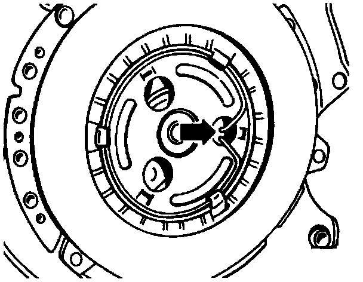
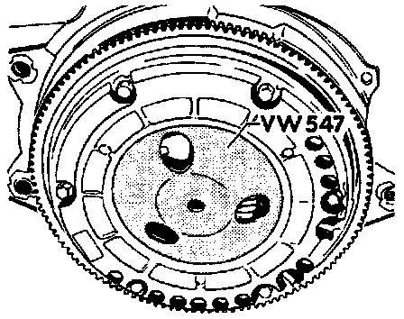
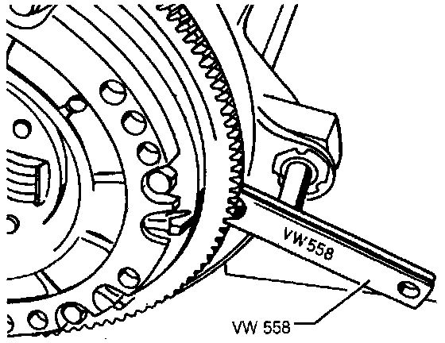
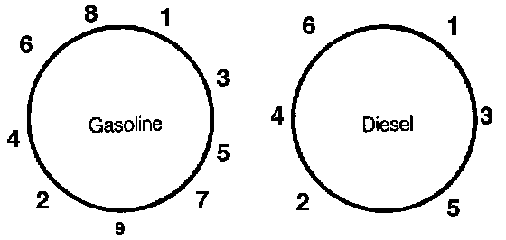
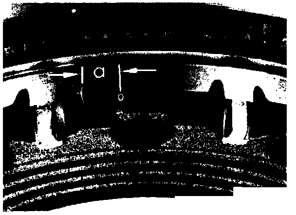

Installation
***THIS ARTICLE INCLUDES CHANGES MADE BY TSB # 309202, DATED NOVEMBER 30 1992, AND TSB # 309304, DATED JUNE 15 1993 ***.1. Position the pressure plate on the crankshaft.
2. Install new pressure plate mounting bolts.
CAUTION: When installing a new pressure plate, always use new mounting bolts.
Clutch Holding Tool:

3. Hold the pressure plate in position with locking tool VW 558 or equivalent, and torque new bolts to 60 Nm (45 ft lbs) + 90°.
4. Place the clutch release plate in position and install the retaining ring.
5. Lightly lubricate the contact surface of the plate and the center seat for the clutch pushrod with lithium grease.
NOTE: Always remove excess grease.
Clutch Release Plate Retaining Ring:

6. Align the ends of the retaining ring (arrow).
7. Coat the splines at the center of the clutch disc and transmission mainshaft with a thin layer of lithium grease or equivalent. Slide the clutch disc back and forth a few times on the main shaft, then wipe off any excess grease.
CAUTION: Use only recommended grease on the splines, otherwise, the clutch disc may bind on the input shaft and cause hard shifting.
8. Install the clutch disc inside the flywheel.
NOTE: Only install clutch discs with nickel plated hubs. The projecting part of the clutch hub faces the flywheel, away from the engine.
These discs can be identified by the color of the hub. They have a shinny stainless steel like appearance.
Earlier version clutch disc hubs are phosphate coated. The hubs on these discs have a flat gray or black appearance, and must not be used.
9. Install the flywheel.
10. Position the flywheel on the dowel pins and start the mounting bolts in their holes. Leave the bolts loose enough so that the clutch disc can still move.
CAUTION: The two guide pins in the flywheel must align with the corresponding holes in the clutch pressure plate, or the pressure plate will be damaged during installation. Do not mistake balancing holes for guide pin holes.
Clutch Alignment Tool:

11. Center the clutch disc using special tool VW 547 (16-Valve use 3178).
12. Tighten down the flywheel attachment bolts evenly until the clutch disc is firmly held in place.
Flywheel Tool:

Flywheel Bolt Torque Pattern:

13. Remove centering tool and install locking tool VW 558 to the flywheel and tighten the flywheel bolts diagonally to 20 Nm (15 ft lbs).
Timing Marks On Flywheel:

NOTE: New replacement flywheels for gasoline engines have no timing mark. They are marked only with a 0° TDC mark. Before installing, make a timing mark on the new flywheel as shown in image.
14. Reinstall the transaxle. Manual Transmission/Transaxle